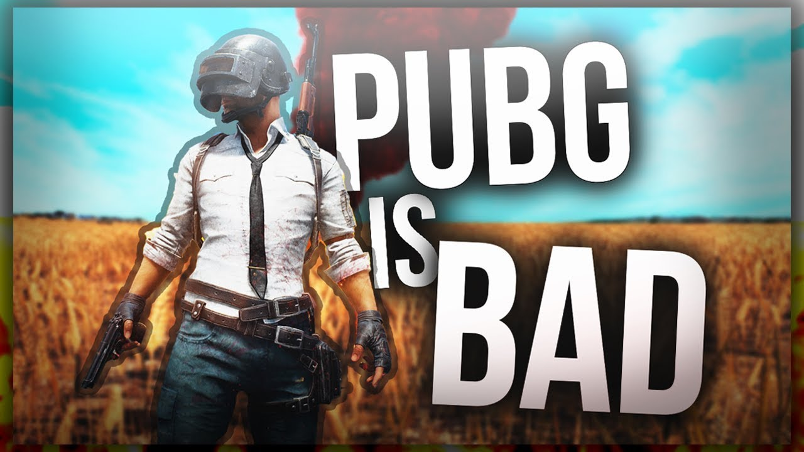

Pubg is soo bad. Note for parents: your kids will beg for money until your deaf. They will play 24/7. You won't be able to get them off! It teaches your kids too kill people. And there is blood! You will go poor or even homeless just because of Pubg. They will have no friends. Opinions matter. I think that all of us should switch to a game without blood. A chat where people don't cuss. Where people don't rage and throw their computer out of the window. The Pubg community chat is much worse than a normal community chat. Free advice: Go play Minecraft. It is a great game with a great community chat. And you can't rage as hard.By:Pubg is bad.  Minecraft is a great game that is better than Pubg. It has many different types of mini games and a survival and creative worlds. You can play with millions of other people and you can friend people. You can get mods and texture packs. It has a great community and lots of people are nice. You can ad practically ANYTHING with mods. It is a world of fun and awesome.